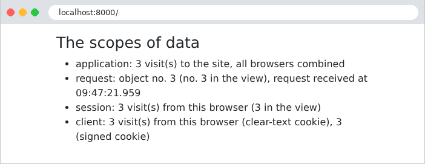

6. Gültigkeitsbereiche von Daten
Eine Webanwendung bedient viele Benutzer gleichzeitig, und jeder Benutzer stellt zahlreiche Anfragen. Daten können daher auf mehreren Ebenen gemeinsam genutzt werden, bekannt als ihr Gültigkeitsbereich:
- Anwendung (Gültigkeitsbereich): Die Daten werden von allen Benutzern während der gesamten Lebensdauer der Anwendung gemeinsam genutzt (zum Beispiel die Liste der Ärzte);
- Anfrage (Gültigkeitsbereich): Die Daten existieren nur für die Dauer der Verarbeitung einer Anfrage (das Modell einer View, der für diese Anfrage identifizierte angemeldete Benutzer);
- Session (Gültigkeitsbereich): Die Daten gehören einem bestimmten Benutzer und müssen von einer Anfrage zur nächsten erhalten bleiben (die gewählte Sprache, ein Warenkorb);
- Client (Gültigkeitsbereich): Daten, die im Browser selbst in einem Cookie gespeichert werden.
In [PHP] verhalten sich diese Gültigkeitsbereiche besonders, weil die Anwendung bei jeder Anfrage neu aufgebaut wird (Beispiel 01): Nichts bleibt im Speicher von einer Anfrage zur nächsten erhalten. Alle Daten, die länger als eine einzelne Anfrage bestehen müssen, werden daher außerhalb von [PHP] gespeichert: im Cache, in einer Datenbank, in Dateien oder auf der Seite des Clients. Das ist die sogenannte „Shared-nothing“-Architektur: Jede Anfrage wird isoliert von einem Prozess verarbeitet, der nichts mit den Prozessen teilt, die andere Anfragen verarbeiten. Dieser Ansatz hat erhebliche Vorteile: Ein Fehler betrifft nur eine einzelne Anfrage, es gelangen keine Daten von einem Benutzer zu einem anderen, und mehrere identische Server können hinter einem Load Balancer betrieben werden, sofern sie denselben Cache und dieselbe Datenbank teilen.
In [Symfony] hat jeder Gültigkeitsbereich seinen eigenen Container:
Gültigkeitsbereich | Container | Lebensdauer |
Anwendung | der Cache (Service [cache.app], Beispiel 20) oder die Datenbank | die gewählte Dauer oder unbegrenzt |
Anfrage | die Services des Containers (ein Objekt pro Klasse während der Anfrage), die Anfrageattribute (Beispiel 12) | Verarbeitung einer Anfrage |
Session | die Session ([$request->getSession()], Beispiel 20), vom Server verwaltet und über ein Cookie abgerufen | standardmäßig bis zum Schließen des Browsers und höchstens für die Dauer der [PHP]-Session (standardmäßig 24 Minuten Inaktivität) |
Client | ein Cookie ([Cookie::create], Beispiel 22), im Klartext | Die Ablaufzeit des Cookies |
Die [Symfony]-Session ist eine serverseitige Session, wie die von [Java] ([JSESSIONID]) oder die Standard-[PHP]-Session, von der sie tatsächlich den Mechanismus und das Cookie übernimmt ([PHPSESSID]): Ihre Daten werden auf dem Server gespeichert (eine Datei pro Session, mit der in unseren Beispielen verwendeten Konfiguration), und der Browser hält nur den Bezeichner – eine zufällige Zahl, die sich unmöglich erraten lässt. Das unterscheidet sich von [Flask], dessen gesamte Session in einem signierten Cookie auf der Client-Seite gespeichert wird.
6.1. Beispiel 23: Gültigkeitsbereiche
Die Datei [config/packages/framework.yaml] konfiguriert die Session und die Sperren, wie in Beispiel 20.
6.1.1. Die Objekte: src/Service/CounterService.php und RequestInfo.php
- Zeilen 12–16: Der Service erhält den Anwendungs-Cache und die Lock-Factory (Beispiel 20);
- Zeilen 20–32: ein Zähler im Anwendungsbereich: eine im Cache unter einem Schlüssel gespeicherte Zahl, die bei jedem Aufruf um 1 erhöht wird. Der „File“-Cache in unseren Beispielen unterstützt keine atomaren Inkrementoperationen: Der Wert muss gelesen, erhöht und dann geschrieben werden, und zwei gleichzeitige Anfragen könnten denselben Wert lesen – was zu einem verlorenen Zählschritt führt. Eine Sperre – eine pro Schlüssel – schützt daher sowohl Lese- als auch Schreibvorgänge; der Block [finally] gibt sie in jedem Fall frei, auch nach dem [return] in Zeile 28;
- Zeilen 34–37: der Besuchszähler.
- Zeilen 10–12: Eigenschaften, die als [readonly] einzeln deklariert werden (statt der gesamten Klasse): Sie können nur einmal zugewiesen werden, und zwar vom Konstruktor;
- Zeilen 16–22: Informationen im Anfragebereich: eine Nummer, abgeleitet von einem Zähler, den alle Anfragen gemeinsam nutzen (der vorherige Service unter einem anderen Schlüssel), und die Zeit der Anfrage einschließlich Millisekunden ([v]-Format). Der Konstruktor erhält den [CounterService] vom Container: Ein Service kann einen anderen Service anfordern, genau wie eine Aktion.
Es ist keine Konfiguration erforderlich: Standardmäßig ist ein Service im Container geteilt (shared). Der Container erstellt das Objekt bei der ersten Anforderung und liefert dann bei allen folgenden Anforderungen dasselbe zurück. Im Standardmodus von [PHP] wird der Container bei jeder Anfrage neu aufgebaut: Ein geteilter Service ist daher ein Objekt im Anfragebereich. (Mit der Option [shared: false] in der Datei [services.yaml] lässt sich auch bei jeder Injection ein neues Objekt anfordern.) Eine Nuance ergibt sich bei Anwendungsservern, die die Anwendung zur Leistungssteigerung von einer Anfrage zur nächsten im Speicher halten, etwa im Worker-Modus von [FrankenPHP]: In diesem Fall wird ein Service von allen Anfragen geteilt, die der Prozess bearbeitet. [Symfony] setzt dann zwischen den Anfragen die Services zurück, die das Interface [ResetInterface] implementieren; diese Services müssen selbst dafür sorgen, dass nichts von einer Anfrage zur nächsten erhalten bleibt.
6.1.2. Eine globale Variable für die Views: config/packages/twig.yaml
- Zeilen 6–7: Eine globale Variable in den Views (Beispiel 15) kann ein Service sein: der Name seiner Klasse, dem [@] vorangestellt ist. Alle Views haben so Zugriff auf die Variable [info], die das [RequestInfo]-Objekt der aktuellen Anfrage ist. [Twig] hat kein Äquivalent zur Direktive [@inject] von [Blade]: Eine View fordert nichts vom Container an; sie erhält, was ihr gegeben wird.
6.1.3. Signierte Cookies: src/Service/SignedCookies.php
Ein Cookie sind Daten, die dem Client anvertraut werden, der sie lesen und ändern kann. [Laravel] verschlüsselt seine Cookies; [Symfony] tut das nicht. Damit ein Cookie vertrauenswürdig ist, genügt es jedoch, dass es signiert ist: Sein Wert wird im Klartext übertragen, aber es folgt eine Signatur, die nur der Server berechnen kann, weil sie von einem geheimen Schlüssel abhängt. Ein vom Client geänderter Wert hat nicht mehr die richtige Signatur, und der Server weist ihn zurück.
- Zeile 13: Der Signaturschlüssel ist das Geheimnis der Anwendung – die Variable [APP_SECRET] in der Datei [.env] (Beispiel 01) –, das der Container als Parameter [kernel.secret] kennt. Ein Parameter ist kein Objekt: Das Attribut [#[Autowire]] teilt dem Container den bereitzustellenden Wert mit, wobei [%name%] auf einen Parameter verweist;
- Zeilen 18–21: Die Signatur ist ein HMAC (Hash-based Message Authentication Code): der SHA-256-Hash des Werts, berechnet mit dem geheimen Schlüssel und hexadezimal geschrieben. Das Cookie enthält den Wert, einen Punkt und dann die Signatur;
- Zeilen 24–34: Die Überprüfung berechnet die Signatur des empfangenen Werts neu und vergleicht sie mit der im Cookie. [hash_equals] vergleicht zwei Zeichenketten in einer Zeit, die nicht von der Anzahl identischer Zeichen abhängt: Ein normaler Vergleich würde beim ersten abweichenden Zeichen abbrechen, und ein Angreifer könnte durch Messen der Antwortzeit die Signatur Zeichen für Zeichen erraten.
Das ist das Prinzip hinter dem JWT-Token, das das nächste Kapitel für die Authentifizierung verwenden wird.
6.1.4. Der Controller: src/Controller/ScopesController.php
- Zeilen 19–20: Die Aktion erhält die Anfrage und drei vom Container bereitgestellte Services;
- Zeile 23: der Anwendungsbereich;
- Zeilen 26–27: der Session-Bereich. [$request->getSession()] liefert die Session des Benutzers; [get(key, default)] liest einen Wert, und [set(key, value)] schreibt ihn. [Symfony] speichert die Session am Ende der Anfrage;
- Zeilen 30–31: der Client-Bereich mit zwei Cookies. Ihre Werte sind vom Browser gelieferte Zeichenketten und können daher fehlen oder ungültig sein: Die Umwandlung [(int)] liefert 0 für [null] oder für Text, der keine Zahl ist. Der Wert des signierten Cookies wird nur akzeptiert, wenn seine Signatur korrekt ist;
- Zeilen 32–39: Um ein Cookie zu setzen, benötigt man das Antwortobjekt: [render] erstellt es (Beispiel 13), danach fügt [setCookie] die Cookies hinzu. Ohne Ablaufdatum bleibt ein Cookie bis zum Schließen des Browsers bestehen (das ist ein „Session“-Cookie im Sinne der Browser).
6.1.5. Die View: templates/scopes/scopes.html.twig
- Zeile 16: [info], die globale Variable: Während derselben Anfrage ist dies dasselbe [RequestInfo]-Objekt wie das der Aktion; die View zeigt seine Nummer an, die mit der von der Aktion erhaltenen übereinstimmen muss;
- Zeile 19: Die Session ist in den Views auch über die Variable [app.session] zugänglich.
6.1.6. Ausführung
Nach einigen Besuchen in einem Browser:

Verfolgen wir die Anfragen mit [curl], das als erster Browser fungiert und seine Cookies in der Datei [a.txt] speichert:
Die Antwort setzt drei Cookies. Das erste, [myVisits], enthält den Wert im Klartext. Das zweite, [mySignedVisits], enthält denselben Wert, gefolgt von einem Punkt und seiner Signatur. Das dritte, [PHPSESSID], ist die Session-ID. Die Session-Daten werden in einer Datei auf dem Server gespeichert, [var/sessions/dev/sess_32da14307b05da3847ea54b2ae3e6f77], deren Name mit der Session-ID übereinstimmt:
Im Serialisierungsformat von [PHP] sehen wir ein Array mit einem einzigen Schlüssel, [visits], und einem ganzzahligen Wert 1 ([i:1]), gefolgt von Informationen von [Symfony] zur Session (Erstellungs- und letztes Verwendungsdatum). Ein zweiter Besuch mit denselben Cookies:
Die Session existiert bereits: Das Cookie [PHPSESSID] wird nicht erneut gesendet. Ein zweiter „Browser“ mit eigener, zunächst leerer Cookie-Datei:
Der Anwendungszähler hat weitergezählt; die Session und die Cookies des zweiten Browsers beginnen wieder bei 1. Jede Anfrage hatte ihr eigenes [RequestInfo]-Objekt, und in jeder sahen die Aktion und die View dasselbe. Schließlich fälscht ein böswilliger Benutzer seine eigenen Cookies: 1.000 Besuche in [myVisits], 999 in [mySignedVisits] (mit einer erfundenen Signatur) und eine selbst ausgedachte Session-ID:
Das Klartext-Cookie wurde unverändert akzeptiert: 1.001 Besuche. Das Cookie [mySignedVisits] hatte dagegen nicht die richtige Signatur: Es wurde ignoriert, als würde es fehlen. Die Signatur eines anderen Werts zu kopieren (etwa die von [1] neben den Wert [999]) funktioniert ebenso wenig: Die Signatur hängt vom Wert ab. Was die ausgedachte Session-ID betrifft: Sie entspricht keiner existierenden Session; [Symfony] weist sie zurück (das ist der „strikte“ Modus der [PHP]-Sessions) und erstellt eine neue Session mit einer neuen ID. Der Benutzer kann sich also nicht die Session eines anderen Benutzers aussuchen.
Merken wir uns die Regel: Daten vom Client sind nur dann vertrauenswürdig, wenn sie vom Server geschützt werden (signiert, wie hier oder wie beim Token im Kapitel über die Authentifizierung, oder verschlüsselt); Daten, die nichts zu verbergen haben und deren Wert vom Server überprüft wird (die Sprache in Beispiel 22), können im Klartext bleiben. Eine Signatur garantiert, dass ein Wert nicht verändert wurde, aber sie verbirgt ihn nicht: Ein Geheimnis darf dem Client niemals anvertraut werden, auch nicht signiert.